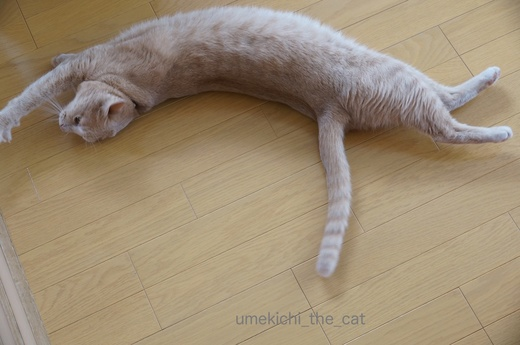
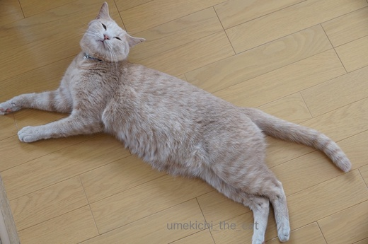
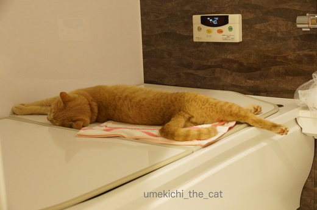
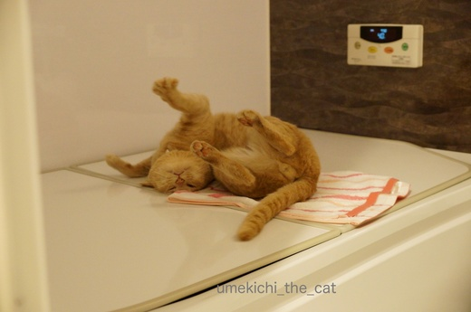
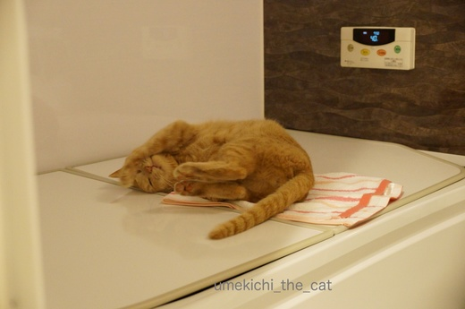

ひとりくりんくるん [梅吉]
「バタンッ！」と音がするので振り向くと

うねうねと転がるカフェオレ色。
梅吉さん、最近くりんくるんしてますね。どうしたんですか？

人間の呼びかけに答えたわけでも、かまってほしい訳でもありません。
一人遊びの途中でも「バタンッ！」隣の部屋の暗闇からも「バタンッ！」
昨夜はお風呂の方から聞こえて来たので見にゆくと・・・・

バタンッ！

くりん

くるん

わぁ〜、へんがお〜



フィニッシュ！
しばらくこのまま動きませんでした(⌒-⌒; )
くりんくるん、どんな感情の発露なのかは不明ですがご機嫌なのは確かな様です。
途中が変顔なのは新発見！！

みてたん？（キリッ
特別展 快慶観て来ました。
（写真追加しました〜）
端正で優美な仏像の数々。
運慶の像の様に力強さは感じられないかもしれませんが静かな迫力に満ちた物ばかりでした。
日本国外に行ってしまった像も展示されていて見ごたえがありましたよ。
たくさん展示されていた弥陀如来立像、
時代を経るごとに着衣の胸元がはだけてラフな着こなしになって行きます。
快慶さんの中で美意識の変化があった模様。
「着衣がはだけているから後期の作品かしら？」なんてどこかで言っちゃおうかな〜(≧▽≦)
奈良に来たらやっぱり興福寺。ただいま国宝館は工事で休館しているのですが
期間限定で国宝館にあった仏像の一部を「天平乾漆群像展」として展示しています。
国宝館では一体一体を平面的に並べていたものを立体的に展示。
こんな並びになっていました。
東寺の立体曼荼羅と同じ方法です。
ちょっと薄暗い堂内に奥行きのある展示は「当時の人はこんな景色を見ていたのかなぁ」と
感じられる素晴らしいものでした。
奈良に行かれる予定のある方はぜひ

カフェオレ色の梅吉

梅吉 2023年8月10日 永眠


梅吉と出会った譲渡会

犬猫の理由なき殺処分ゼロ
妄想広告
UMEKICHI 光

爆発的に早い！
時々攻撃的！
Thanks to Mr.Boss365
爆発的に早い！
時々攻撃的！
Thanks to Mr.Boss365

梅吉さん、猫舞の練習ですかぁ(^O^)
ご機嫌そうで何よりです(^_^)v
うちのにゃんずも時々舞を披露してますが、他のにゃんずが「何？何？」と
寄ってくるので途中で我にかえって止めちゃいます^^;
by ニッキー (2017-04-20 14:22)
ご機嫌なんだ〜(^^)
見ているだけで嬉しくなっちゃいますね〜。
by も〜 (2017-04-20 15:05)
一枚目の写真！！めちゃくちゃ伸びてますねぇ～(#^.^#)
くるんくるん回っている姿♪
可愛いですねぇ～！ご機嫌な姿は
見ている私たちもご機嫌にしてくれますね♪
by きぃ (2017-04-20 15:59)
梅吉さん、きっと気持ちがいいんだよねえ〜＾＾
平和だね。
by じゅらまろ (2017-04-20 16:57)
2枚目と最後の顔が違ってみえますね。
のびのび可愛いです～
by muku (2017-04-20 18:48)
梅吉君、密かな儀式「変顔クルリン」ちぃさんに見つかっちゃいましたね！
こうやって世界中の猫と交信し、密かに犬派を猫派に「クルリン」させるという…
by BillK-ko (2017-04-20 19:08)
素晴らしい弓なりです。
『みてたん？（キリッ』んって、イケメン（笑）
by kiki (2017-04-20 20:42)
梅吉さん、とても気持ち良さそう♪
癒されますね～。^^)
すごい仏像の数ですね！
一度見てみたいです。
by yes_hama (2017-04-20 21:26)
”梅吉ダンス”の秘密練習、見ちゃった～って感じですね(*^▽^*)
伸びても縮んでも裏返っても気持ちよさそう♪
それにしても梅吉さん、長～い！ こてつの比じゃないです^^
by ゆきち (2017-04-20 22:47)
見てたでーヽ(*´∀｀)ノ
ずっと見てられます！！
梅吉さん可愛いですヾ(*´∀｀*)ﾉ
お腹もふもふしたいですー!!!!
by sumi-cyan (2017-04-21 00:23)
梅吉さん、何かやらかそうとしてるのでは？！
その為の準備運動に見えます。^ ^
そこに期待して、ポチッと！
by KENT0mg (2017-04-21 08:52)
いいなーいいなーいいなー快慶展！！
行きたいんですよー。
でも無理なんだけど；；
23日の朝に、大阪の方ではよみうりテレビで快慶の番組やるんです。
すきな仏師さんが出るので大阪の友達に録画予約たのんじゃったｗ
梅吉君、ごきげんのくるんくるん
その変顔がたまらなく好みだわ♪
けっこう激しく「ばたん」って倒れます？
うみもよく頭からバタンって倒れてくねくねご機嫌なの。
バカになるから激しく倒れないでーって言ってます(笑)
by リュカ (2017-04-21 10:37)
良く伸びるよねぇ猫てっ（＾◇＾）
by みうさぎ (2017-04-21 15:03)
最後の「みてたん？」がほんとにそんな感じ(*^^*)きりっとした顔とくりんくるんしてた顔が違い過ぎて笑えます!(^^)!
by palpal (2017-04-21 16:17)
おぉぉ、すばらしい演技!!!
練習にいそしんでらっしゃるのですにゃ♪ 猫くるりん選手権!!!
なんか、公園の子たちも、ひそかに練習中らしい？ 開催地は秘密なんだって(^m^)
by のらん (2017-04-22 07:34)
ニッキーさん＞猫舞のご披露だったのですね。
じゃあ、「なんですか〜そのお腹！！」と言って触るのは舞を中断する
失礼な行為だったと・・・
道理でだんごむし状にになってがぶがぶ、けりけりされるはずです(⌒-⌒; )
「何？何？」と見つめると止めちゃうかもしれないのですね。
見ないふりして熱い視線を注ぐことにしますわww
も〜さん＞見てるとめっちゃ和むんですが一人でそっとしていることが多くて・・・・
「何一人でくりんくるんしてるの〜？」と見に行くと「なんや？」と
真顔になったりします^^;
きぃさん＞伸びると長い！のですよ〜＾＾
お腹をモフろうとするとすぐに丸まっちゃいますけどね。
くりんくるん結構激しい時があって「だ、大丈夫かなこの子」と思う事もあります^^;
じゅらまろさん＞そうそう＾＾
梅吉が気持ちよく平和に過ごしてくれるのが何より一番！！
mukuさん＞コメントありがとうございます♪
梅吉は表情豊かで色んな顔をしてくれます。
感情表現もね、ガブガブから甘々モードまでとっても多彩。
また梅吉を見にいらしてくださいね〜（＾◇＾）
BillK-koさん＞常々怪しいと思っていたらそんな秘密結社「変顔クルリン」団
があったのですね！
ねこ様集団、みんな勝手でまとまり悪そうだけど猫派に転向させる手管は
天下一品だと思うわ！クルリン！！ヾ(*ΦωΦ)ﾉ
kikiさん＞弓なり、手と足を持ってさらに反らせるとお腹が外側の「円」
が出来そうなんですが途中でガブ〜っとされてしまいます^^;
最後のキメ顔、イケメンですか？
ありがとうございま〜すＯ(≧▽≦)Ｏ
yes_hamaさん＞くりんくるんご機嫌梅吉でした。
ご機嫌で無防備にお腹を晒しているくせに触ると怒る・・・ひどいわ〜( ꒪⌓꒪)
仏像群、ぎゅっとまとまって展示してあるとその空間だけ違う時間が流れている様でした。
ゆきちさん＞お風呂で温かったのが回転系「梅吉ダンス」につながったと思われます（＾◇＾）
確かに梅吉長いです。一度測って見たいのですが
メジャーをびゃ〜っと伸ばすと理性が吹っ飛んでしまって・・・^^;
こてつくんみたいにフローリングの板目で目測つけてみようかな。
sumi-chanさん＞そう＾＾ずっとみてたで〜。
お腹もふもふすると、がぶがぶけりけり返しされますよ〜(^_-)-☆
KENT0mgさん＞可愛く、くりんくるんと人間を油断させておいて
何かしてやろうと・・・・如何にも梅吉が考えそうなことだ〜！
リュカさん＞快慶展良かったですよ〜。TV番組も録画予約済み！
主催のよみうりテレビ、力入ってますよね＾＾
秋にはトーハクで運慶展ですよね〜。こちらは朝日新聞主催っと。
いいなぁ・・・・
お察しの通り「ばたん」はこちらがビクッとするほどの音で倒れますよ〜。
うみちゃんも激しく倒れるのね。激しさはご機嫌度に比例するのかなぁ。
頭からばたんって心配になるよねーww
うちは「それ以上アホにならんといてや〜」ですわwwww
みうさぎさん＞コメントありがとうございます♪
本当にみょ〜〜〜〜〜んとよく伸びますよ(≧▽≦)
あの伸びている分、普段はどこに収納されてるんだろう・・・
palpalさん＞キメ顔、凛々しいでしょう(≧▽≦)
キメるときはキメる漢、梅吉ですっ•̀.̫•́✧
のらんさん＞この日の演技は加点がもらえる様な素晴らしい出来栄えでしたよ＾＾
我が家地方でもガブガブ選手権、白目大会と色々開催される様なんですが・・・
「おかーさん付き添いたのですが？」と聞いても
絶対に予定を教えてくれません( ꒪⌓꒪)
by ちぃ (2017-04-22 08:52)
すんごい伸びシロ～～～！
(＞▽＜)きゃー♪
by Ginger (2017-04-22 15:41)
Gingerさん＞どこまで伸びるのか・・・ふふふ=´ᆺ`=
毎日かわいい、かわいいと褒めまくっているので
まだまだどんどん伸びそうですよ(๑˃̵ᴗ˂̵)و
by ちぃ (2017-04-22 20:00)